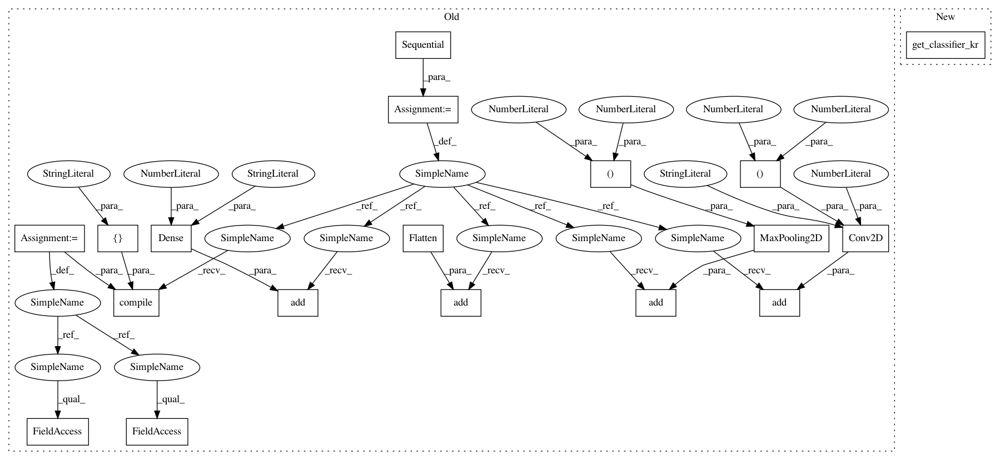

c0e9a520c944e971b0ea53a9e81142e2e6bbab64,art/attacks/universal_perturbation_unittest.py,TestUniversalPerturbation,test_krclassifier,#TestUniversalPerturbation#,106
Before Change
// Initialize a tf session
session = tf.Session()
k.set_session(session)
// Get MNIST
(x_train, y_train), (x_test, y_test) = self.mnist
// Create simple CNN
model = Sequential()
model.add(Conv2D(4, kernel_size=(5, 5), activation="relu", input_shape=(28, 28, 1)))
model.add(MaxPooling2D(pool_size=(2, 2)))
model.add(Flatten())
model.add(Dense(10, activation="softmax"))
model.compile(loss=keras.losses.categorical_crossentropy, optimizer=keras.optimizers.Adam(lr=0.01),
metrics=["accuracy"])
// Get classifier
krc = KerasClassifier((0, 1), model, use_logits=False)
krc.fit(x_train, y_train, batch_size=BATCH_SIZE, nb_epochs=2)
After Change
:return:
// Build KerasClassifier
krc, sess = get_classifier_kr()
// Get MNIST
(x_train, y_train), (x_test, y_test) = self.mnist
In pattern: SUPERPATTERN
Frequency: 3
Non-data size: 18
Instances
Project Name: IBM/adversarial-robustness-toolbox
Commit Name: c0e9a520c944e971b0ea53a9e81142e2e6bbab64
Time: 2019-02-13
Author: beat.buesser@ie.ibm.com
File Name: art/attacks/universal_perturbation_unittest.py
Class Name: TestUniversalPerturbation
Method Name: test_krclassifier
Project Name: IBM/adversarial-robustness-toolbox
Commit Name: c0e9a520c944e971b0ea53a9e81142e2e6bbab64
Time: 2019-02-13
Author: beat.buesser@ie.ibm.com
File Name: art/attacks/universal_perturbation_unittest.py
Class Name: TestUniversalPerturbation
Method Name: test_krclassifier
Project Name: IBM/adversarial-robustness-toolbox
Commit Name: 34c9172185fc79e6a971919f910fbbb7e945f5e5
Time: 2019-03-08
Author: Maria-Irina.Nicolae@ibm.com
File Name: art/classifiers/keras_unittest.py
Class Name: TestKerasClassifier
Method Name: setUpClass
Project Name: IBM/adversarial-robustness-toolbox
Commit Name: 347c815a1cfebd378d8723fe9ca02ff4361b4509
Time: 2020-01-16
Author: M.N.Tran@ibm.com
File Name: tests/attacks/test_knockoff_nets.py
Class Name: TestKnockoffNets
Method Name: test_keras_classifier